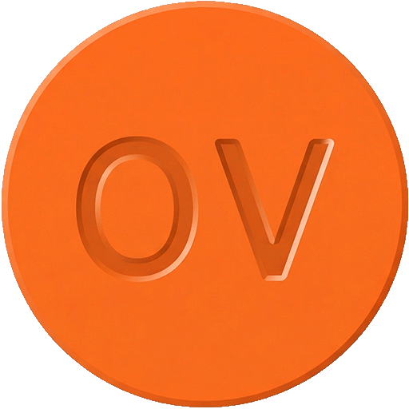

Az életed
0%
Orbánt tartalmaz.
0 napodból 0 napon volt Orbán Viktor Magyarország miniszterelnöke.

tuladagolas.huAdd meg a születési dátumodat, és tudd meg, mennyi Orbán van az életedben!
Ha a mostani választáson is a Fidesz nyer, hamarosan olyan hallgatók kezdik meg tanulmányaikat a felsőoktatásban, akiknek már a születésükkor is Orbán Viktor volt a miniszterelnök. Sajnos ezer más okunk is van kormányt és rendszert váltani, de ez önmagában is elég lenne.
Pál Zsolt, egyetemi docens, Miskolci Egyetem
A 2026. április 12-i választásig:
Az életed
Orbánt tartalmaz.
0 napodból 0 napon volt Orbán Viktor Magyarország miniszterelnöke.
Minden négyzet egy hét az életedből.